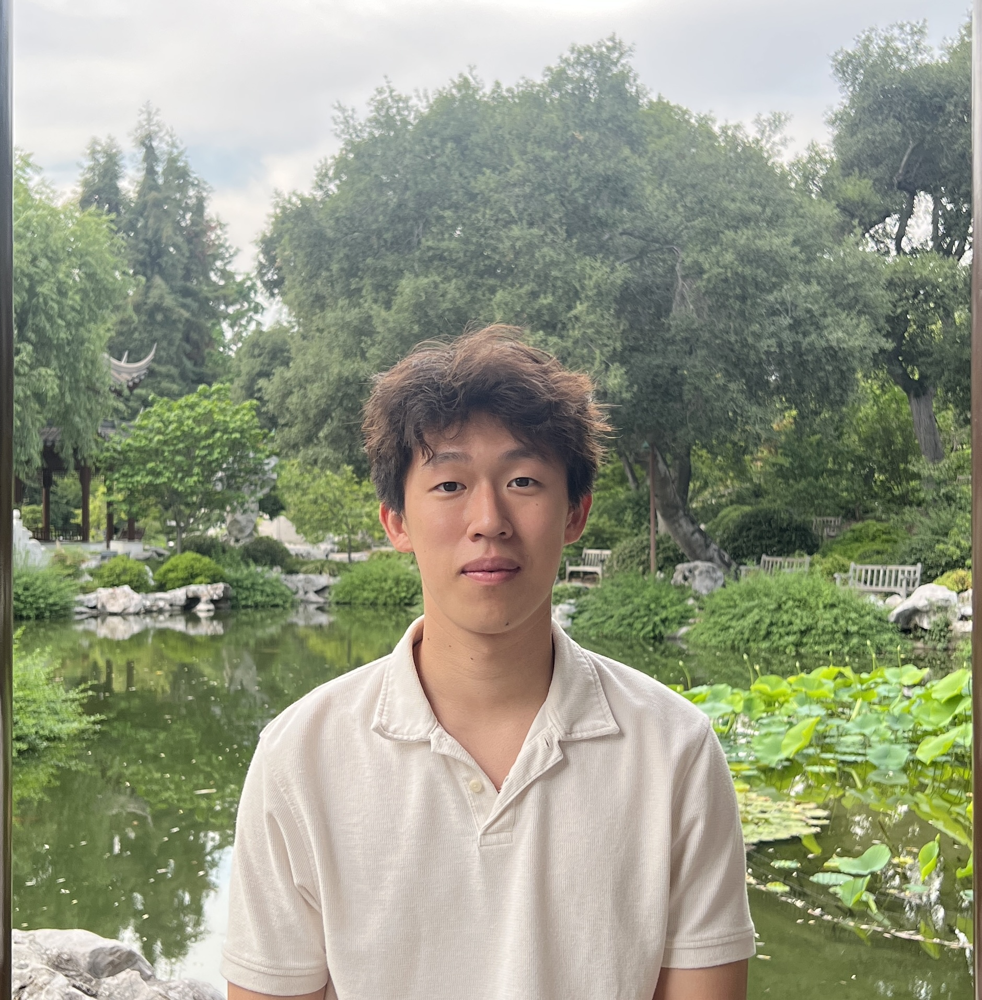

About Me
I'm Zhong Wen Aaron Lu, previously a Computer Science student at Boston University, graduated in May 2025. I'm passionate about web development, machine learning, and AI. I enjoy problem solving and learning about upcoming new technologies.
Education
Boston University, School of College & Arts for Computer Science
B.S in Computer Science, Graduated May 2025
Technical Skills
- Languages: Java, JavaScript, Python, C
- Web Development: HTML5, JavaScript, React.js, Node.js
- Machine Learning & AI: Scikit-learn, NLTK, Pandas, NumPy
- Database: Relational Database (MySQL), non-Relational Database (MongoDB), XML
